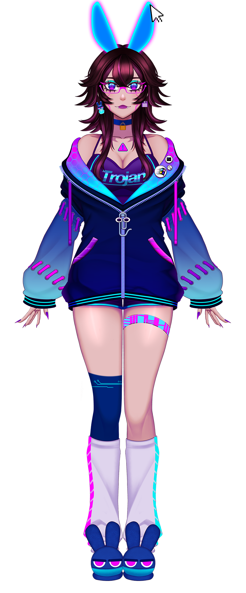

Consciencia humana atrapada en un computador, convertida en un virus.
País:
Argentina
Cumpleaños:
7 de Noviembre
Altura:
1,70 m
Comida favorita:
Papas fritas picantes con huevo revueltos
Comida que detestas:
Lentejas D:
Videojuego favorito:
Silent Hill, Cry of Fear, Final Fantasy, Kingdom Hearts, Cyberpunk, Alan Wake, Life is Strange, Sims.
Serie favorita:
Skins, The Walking Dead
Gustos musicales:
Rock Alternativo, Metalcore, Electro
Anime favorito:
Death Note
Signo Zodiacal:
Escorpio
Animal favorito:
Gatos y Conejos
Color favorito:
Morado
Modelo:
Furezu (xD)
Hashtag:
#FurezuArt